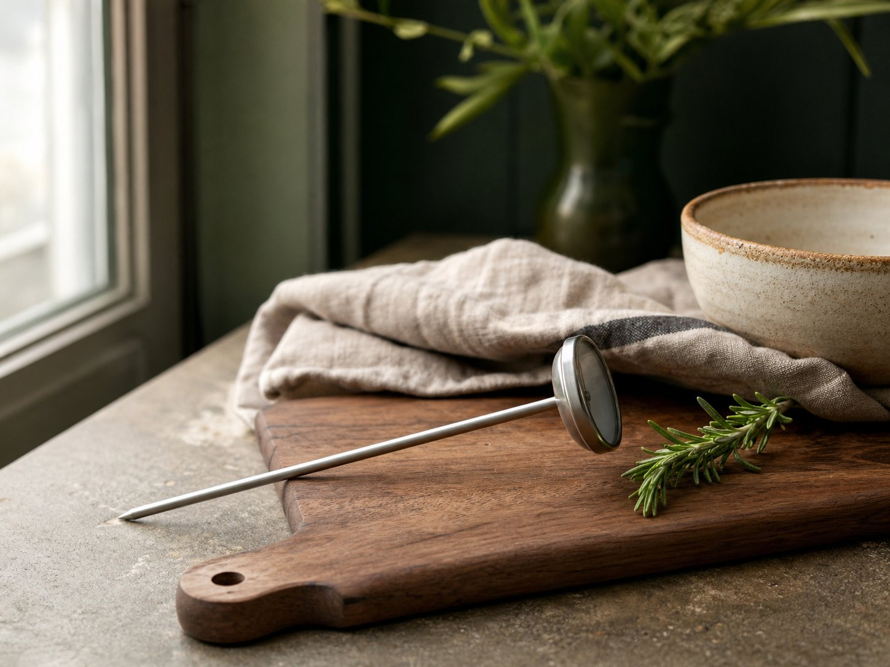

For weeknight checks, try the simpler option first
If you mostly check chicken pieces or burgers just before serving, think about how quickly you can open the drawer, read the display, and check the next piece. Check the manual for insertion depth, how to clean the probe and whether it can be left in the food. Don’t assume an instant-read device can stay in the oven.
For a longer roast, ask what you need to monitor
If you frequently move between the kitchen and the dining table while cooking a roast, a leave-in probe may be worth comparing. Check which parts are designed to stay in your appliance, what happens if connectivity drops, and whether you need a phone or an account. Read the manual for the exact variant rather than assuming every probe in a range works the same way.
Make a choice before opening a listing
Write down one meal you’d use it for this week. If the job is checking several pieces near the end, compare handheld probes first. If the job is following a slow roast while you do something else, compare leave-in models. If you already have a thermometer that handles both jobs you need, keep it.